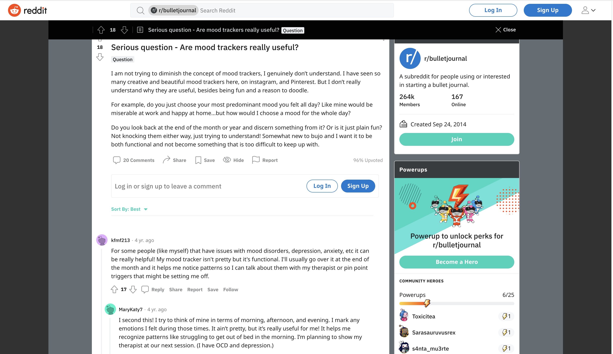
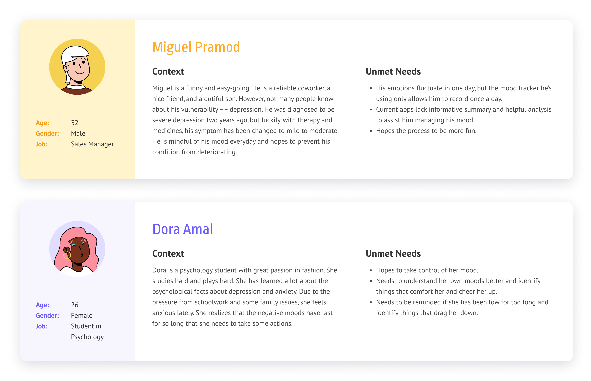

How might we help people who deal with depression and anxiety to track their moods easily and provide them with informative and useful insights?
Moodi is a simple mood tracking app for people with depression or anxiety to understand their emotions better. Users can easily keep a journal of their moods daily and identify patterns and triggers. Unlike most of existing mood trackers, Moodi allows users to customize mood tags and has a virtual buddy to company them and give them advice.
• Conducted secondary research on Reddit.
• Ideated and sketched out design concepts.
• Developed user flow, wireframes, and hi-fi prototypes.
How might we help people who deal with depression and anxiety to track their moods easily and provide them with informative and useful insights?
Since mental health is a sensitive topic, people might feel uncomfortable talking to me in person. Therefore, I dived into Reddit to listen to people secretly to understand how people use mood trackers and their gains and pains. Many Reddit users greatly shared their experience and tips with various mood trackers they used to help out each other.
Key Insights
The design targets on people who deal with depression and anxiety from various levels and need to track their moods at a daily basis by themselves. Below are two primary personas.
Goals
Key Insights